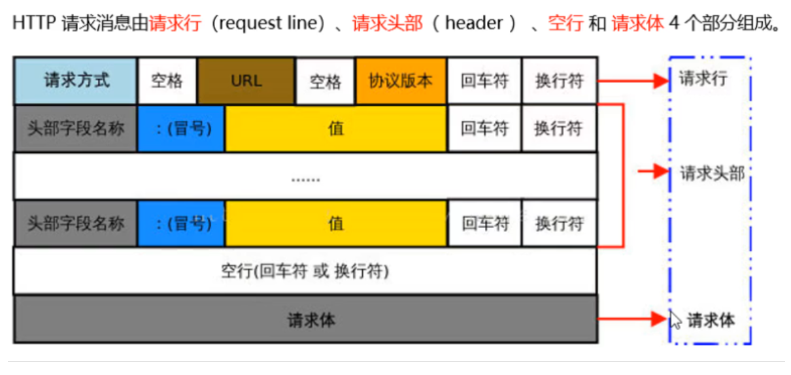
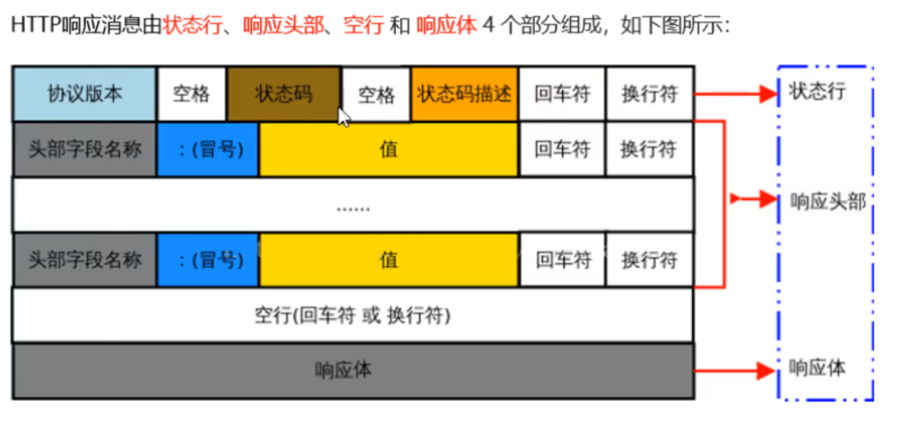
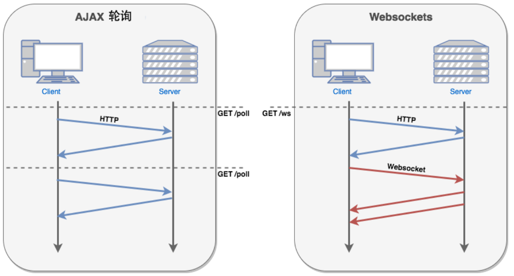
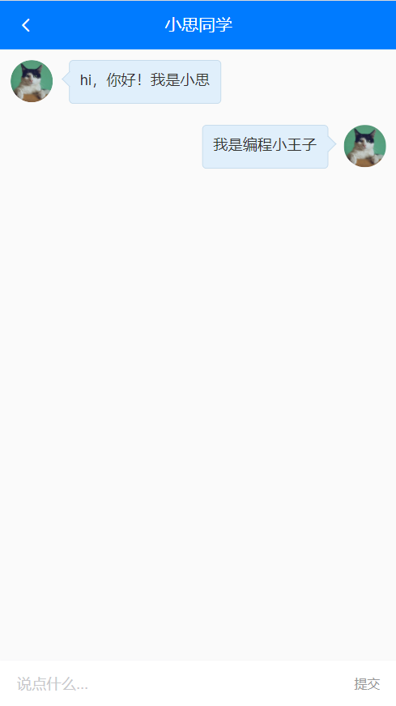
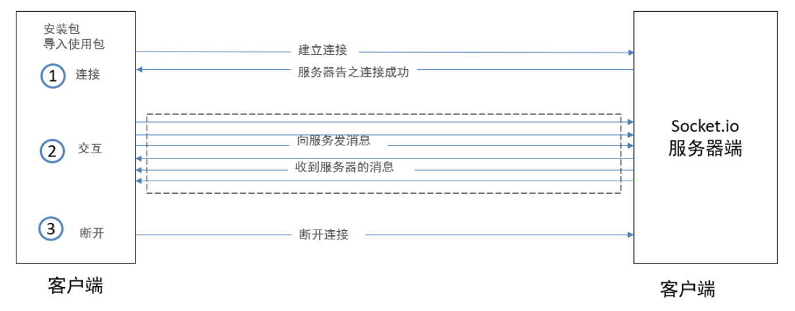

Day06_小思同学
# 1.http协议复习
# 目标
- 什么是http协议
- 什么是请求报文和响应报文
# 讲解
http中文意思: 超文本传输协议, 定义服务器和客户端的传送格式
请求发送的数据包, 叫请求报文, 格式如下

响应回来的数据包, 叫响应报文, 格式如下

# 缺点
- HTTP 协议：客户端与服务器建立通信连接之后
- 服务器端只能被动地响应客户端的请求，==无法主动给客户端发送消息。== 一次请求才能对应一次响应
http建议阅读: http://lidongxuwork.gitee.io/pages/computer/network/http%E5%8D%8F%E8%AE%AE.html#%E5%AD%97%E6%AE%B5%E6%80%BB%E7%BB%93
http-mdn地址: https://developer.mozilla.org/zh-CN/docs/Web/HTTP
# 小结
- http协议是规划端与端传输信息的格式
- http协议暂定一次请求对应一次响应
# 2.即时通信介绍
# 目标
- 什么是即时通信
- ajax是否能实现
- 即时通信实现技术
# 讲解
即时通信: 即时发送和接收互联网消息等的业务
ajax只能是发起请求后, 得到一次响应, 无法实现即时通信
但是可模拟, 比如创建计时器, 每隔1秒, 自动调用一次接口, 拿到服务器要发送的数据
但这非常可怕
(1): 万一服务器上没有你要的最新消息, 这次请求和响应是无意义的
(2): 服务器为了给你做出响应, 还占用了一定内存和带宽, 很浪费
以上技术叫计时器轮询, 迫不得已才能使用(一般用不上, 了解即可)
HTML5出了一个新的技术叫WebSocket, 可以在一个TCP链接上, 实现即时通信效果
- 需要前端支持
- 需要后端支持
# 使用场景
- 直播
- 主播的实时画面数据, 推送到服务器上
- 服务器主动推送视频流到所有客户端设备上(重点)
- 语音
- 说话人声音数据流推送到服务器上
- 服务器推送给指定的客户端设备上(重点)
- 文字聊天
- 有一个人发送文字到服务器上
- 服务器推送给指定/所有客户端(重点)
- 体验下: http://123.57.109.30:4005/index2.html (多开几个窗口自己跟自己聊)
# 小结
- 什么是即时通信?
- 服务器能主动给客户端发送消息, 不局限于一次请求一次响应
- ajax是否能实现即时通信?
- 只能模拟, 用轮询方式, 但是耗费资源, 少用
- 如何实现即时通信?
- 前端采用WebSocket协议, 也是新出的一个类
- 后端也要提供WebSocket接口地址, 建立连接
# 3.webSocket使用
# 目标
- 自己用原生JS实现一次WebSocket使用
- 前提: 一定需要一个后端服务器(支持socket的)
# 概念
它是一种新的技术, 前后端只要支持这种协议, ==后端可以主动向前端推送内容==
项目中使用: 做一个智能客服
Websocket 通过HTTP/1.1 协议的101状态码进行握手
其实VueCli脚手架服务器 和 浏览器之间就建立了一个WebSocket通道
才实现的代码一改, 服务器向浏览器主动推送更新的js文件, 页面就自动更新了
协议对比

# 体验 - 前端代码
代码直接复制体验即可
这里后台采用: wss://echo.websocket.org 这个地址实现socket连接
<!DOCTYPE html>
<html lang="en">
<head>
<meta charset="UTF-8">
<meta name="viewport" content="width=device-width, initial-scale=1.0">
<title>体验websocket</title>
<style>
#contanier {
width: 500px;
height: 400px;
border: 2px dashed #7575e7;
overflow-y: auto;
}
</style>
</head>
<body>
<div id="contanier"></div>
<!-- 1 建立连接 (拨号) -->
<!-- 2 发消息 接消息 -->
<!-- 3 关闭连接 -->
<input type="text" id="message">
<button onclick="openWS()">建立连接</button>
<button onclick="sendMessage()">发送消息</button>
<button onclick="closeWS()">关闭连接</button>
<script>
var dom = document.getElementById("contanier")
var inputDom = document.getElementById("message")
var isOpen = false // 表示是否已经建立了拨号
var ws; // 别的方法 也需要使用ws
// 打开websocket连接
var openWS = function (){
/// 网络上提供的一个测试websocket功能的服务器地址。
/// 它的效果是，你向服务器发什么消息 ，它就原样回复给你。
ws = new WebSocket('wss://echo.websocket.org') // 建立与服务器的连接
// onopen是webSocket约定事件名
// 当本地客户端浏览器与服务器建立连接之后，就会执行onopen的回调
ws.onopen = function (event) {
isOpen = true
// 建立成功
dom.innerHTML = dom.innerHTML + `<p>与服务器成功建立连接</p>`
}
// 接收消息
// onmessage是webSocket约定事件名
// 如果从服务器上发过来了消息，则会进入onmessage的回调
ws.onmessage = function (event) {
// 由于 我们先给服务器发了消息 服务器给我们回了消息
dom.innerHTML = dom.innerHTML + `<p style='color: blue'>服务器说:${event.data}</p>`
}
// onclose是webSocket约定事件名
ws.onclose = function () {
// 此函数表示 关闭连接成功
isOpen = false // 把状态关闭掉
dom.innerHTML = dom.innerHTML + `<p>与服务器连接关闭</p>`
}
}
// 发送消息 接收消息
var sendMessage = function () {
if(inputDom.value && isOpen) {
// 发消息 要等到 连接成功才能发 而且内容不为空
// 发消息就是send
ws.send(inputDom.value) // 发送消息
// 发完之后 添加到 当前视图上
dom.innerHTML = dom.innerHTML + `<p style='color: red'>我说:${inputDom.value}</p>`
inputDom.value = ''
}
}
// 关闭连接
var closeWS = function () {
ws.close() // 关闭连接
}
</script>
</body>
</html>
# 小结
- vuecli脚手架启动的webpack开发服务器, 和浏览器之间也建立着一条socket通道
- WebSocket还是基于TCP, 但是会隔几秒发一个很小的包给后台(心跳包) 维持这段连接
# 4.socket.io包使用
前端对WebSocket封装很好
后端对socket代码也封装好了
# 目标
- 后端socket支持
- nodejs的Express建立web服务器
- nodejs集成socket.io包开启后端socket服务
- 前端也要使用socket.io包使用socket服务
- 英文文档: https://socket.io/docs/v4/client-initialization/
- 中文文档: https://www.w3cschool.cn/socket/socket-k49j2eia.html
# 后端代码
server.js
const express = require("express")
const app = express()
app.use(express.static(__dirname + '/public'))
var http = require('http').Server(app);
http.listen(4005)
var io = require('socket.io')(http);
// io.on('connection') -- 固定的, 用于 监测有没有人用socket服务链接我, 触发后面的函数
io.on('connection', function(socket){ // socket连接者对象
// console.log('a user connected');
socket.on('cTos', data => { // 谁来链接我, 我就给谁绑定一个事件叫cTos(随便), data接收的就是前端触发这个事件传递过来的聊天消息
// io.sockets(拿到当前连接池里所有的socket对象-链接到我的所有人), emit()触发事件(前端事件叫sToC) ---- 广播
io.sockets.emit('sToC', data) // 把当前收到的聊天消息, 发送给所有连接着(前端)
})
});
# 前端代码
index.html
<!DOCTYPE html>
<html lang="en">
<head>
<meta charset="UTF-8">
<meta http-equiv="X-UA-Compatible" content="IE=edge">
<meta name="viewport" content="width=device-width, initial-scale=1.0">
<title>首页</title>
</head>
<body>
<script src="https://cdn.jsdelivr.net/npm/jquery/dist/jquery.min.js"></script>
<!-- 1. 引入前端的socket.io注意版本 一定要跟后台对上 -->
<script src="https://cdn.jsdelivr.net/npm/socket.io@4.1.2/client-dist/socket.io.min.js"></script>
<div>
<p>聊天窗口:</p>
<hr>
<div id="result"></div>
</div>
<div>
<input type="text" placeholder="用户名" id="user">
<input type="text" placeholder="消息" id="msg">
<button id="btn">发送</button>
</div>
<script>
// 2. 用io()函数链接socket服务器
// 如果代码部署到了线上服务器, 这个localhost要换成线上的ip地址
// 因为这个网页请求到本地浏览器上查看, 你要还是localhost那不是请求本地呢吗?
const socket = io("ws://localhost:4005")
$("#btn").on("click", function () {
let user = $("#user").val()
let msg = $("#msg").val()
console.log(user, msg);
// 3. socket触发后端的事件
socket.emit('cTos', { user, msg })
})
socket.on('sToC', obj => {
$("#result").append($(`<p>${obj.user} 说: ${obj.msg}</p>`))
})
</script>
</body>
</html>
# 第三方使用
使用第三方公司封装的插件(SDK)
推荐2个比较常用的即时通信服务平台
- 环信
- 容联云
具体使用过程, 根据文档, 集成到自己项目中
# 小结
- 可以不用原生WebSocket干, 使用一些包例如, socket.io包
- 前端要注意使用client名字的js文件
- 也可以使用第三方服务, 快速集成功能
# 5.小思同学_页面准备
# 目标
创建小思同学页面和标签
配置路由

# 步骤
views/Chat/index.vue - 创建页面
<template> <div class="container"> <!-- 固定导航 --> <van-nav-bar fixed left-arrow @click-left="$router.back()" title="小思同学"></van-nav-bar> <!-- 聊天主体区域 --> <div class="chat-list"> <div> <!-- 左侧是机器人小思 --> <div class="chat-item left"> <van-image fit="cover" round src="https://img.yzcdn.cn/vant/cat.jpeg" /> <div class="chat-pao">这里是别人说的话</div> </div> <!-- 右侧是当前用户 --> <div class="chat-item right"> <div class="chat-pao">这里是我说的话</div> <van-image fit="cover" round src="https://img.yzcdn.cn/vant/cat.jpeg" /> </div> </div> </div> <!-- 对话区域 --> <div class="reply-container van-hairline--top"> <van-field placeholder="说点什么..."> <template #button> <span style="font-size:12px;color:#999">提交</span> </template> </van-field> </div> </div> </template> <script> export default { name: 'Chat' } </script> <style lang="less" scoped> .container { height: 100%; width: 100%; position: absolute; left: 0; top: 0; box-sizing: border-box; background: #fafafa; padding: 46px 0 50px 0; .chat-list { height: 100%; overflow-y: scroll; .chat-item { padding: 10px; .van-image { vertical-align: top; width: 40px; height: 40px; } .chat-pao { vertical-align: top; display: inline-block; min-width: 40px; max-width: 70%; min-height: 40px; line-height: 38px; border: 0.5px solid #c2d9ea; border-radius: 4px; position: relative; padding: 0 10px; background-color: #e0effb; word-break: break-all; font-size: 14px; color: #333; &::before { content: ''; width: 10px; height: 10px; position: absolute; top: 12px; border-top: 0.5px solid #c2d9ea; border-right: 0.5px solid #c2d9ea; background: #e0effb; } } } } } .chat-item.right { text-align: right; .chat-pao { margin-left: 0; margin-right: 15px; &::before { right: -6px; transform: rotate(45deg); } } } .chat-item.left { text-align: left; .chat-pao { margin-left: 15px; margin-right: 0; &::before { left: -5px; transform: rotate(-135deg); } } } .reply-container { position: fixed; left: 0; bottom: 0; height: 44px; width: 100%; background: #f5f5f5; z-index: 9999; } </style>配置路由
import Chat from '@/views/Chat' { path: '/chat', component: Chat }点击van-cell单元格跳转页面
<van-cell icon="chat-o" title="小思同学" is-link to="/chat"/>
# 小结
- van-cell有to属性也能跳转路由
# 6.小思同学_数据获取和渲染
# 目标
- 铺设小思同学页面
- 先把固定数据铺设上去
# 步骤
先在本地渲染数组 - 准备数组并循环渲染到标签上
export default { name: 'Chat', data () { return { word: '', // 输入框的内容 // 所有的聊天消息 list: [ // 只根据 name 属性，即可判断出这个消息应该渲染到左侧还是右侧 { name: 'xs', msg: 'hi，你好！我是小思' }, { name: 'me', msg: '我是编程小王子' } ] } } }把数据循环到标签上, 注意判断数据是哪一边的, 给输入框绑定v-model
<template> <div class="container"> <!-- 固定导航 --> <van-nav-bar fixed left-arrow @click-left="$router.back()" title="小思同学"></van-nav-bar> <!-- 聊天主体区域 --> <div class="chat-list"> <div v-for="obj, index in list" :key="index"> <!-- 左侧是机器人小思 --> <div class="chat-item left" v-if="obj.name === 'xs'"> <van-image fit="cover" round src="https://img.yzcdn.cn/vant/cat.jpeg" /> <div class="chat-pao">{{ obj.msg }}</div> </div> <!-- 右侧是当前用户 --> <div class="chat-item right" v-if="obj.name === 'me'"> <div class="chat-pao">{{ obj.msg }}</div> <van-image fit="cover" round src="https://img.yzcdn.cn/vant/cat.jpeg" /> </div> </div> </div> <!-- 对话区域 --> <div class="reply-container van-hairline--top"> <van-field v-model="word" placeholder="说点什么..."> <template #button> <span style="font-size:12px;color:#999">提交</span> </template> </van-field> </div> </div> </template>
# 小结
- 如何区别消息是谁的?
- 根据消息对象里name字段的值, 决定用哪一边div承载消息
# 7.小思同学_webSocket使用
# 目标
继承webSocket, 和后台建立通道
完成效果

# 步骤
安装客户端socket的包(支持websocket) - 内部对websocket进行了封装
yarn add socket.io-client@4.0.0在Chat/index.vue引入包
// 导入 socket.io-client 包 import { io } from 'socket.io-client' // 定义变量，存储 websocket 实例 let socket = null创建socket服务
created() { // ... // 创建客户端 websocket 的实例 socket = io('http://toutiao.itheima.net', { query: { token: this.token }, transports: ['websocket'] }) }监听是否连接成功
只有连接内置事件执行了, 才能进行后续操作
created() { // 建立连接的事件 socket.on('connect', () => { console.log('与服务器建立了连接') }) }在组件销毁前, 关闭服务
// 组件被销毁之前，清空 sock 对象 beforeDestroy() { // 关闭连接 socket.close() // 销毁 websocket 实例对象 socket = null },在created监听socket的消息
created() { // ... // 接收到消息的事件 socket.on('message', data => { // 把服务器发送过来的消息，存储到 list 数组中 this.list.push({ name: 'xs', msg: data.msg }) }) },在 send事件中, 把服务器发来的数据装到数组里
sendFn () { // 判断内容是否为空 if (!this.word) return // 添加聊天消息到 list 列表中 this.list.push({ name: 'me', msg: this.word }) }客户端调用
socket.emit('message', 消息内容)方法把消息发送给 websocket 服务器：// 向服务端发送消息 sendFn () { // 判断内容是否为空 if (!this.word) return // 添加聊天消息到 list 列表中 this.list.push({ name: 'me', msg: this.word }) // 把消息发送给 websocket 服务器 socket.emit('message', { msg: this.word, timestamp: new Date().getTime() }) // 清空文本框的内容 this.word = '' }
# 小结
vuecli项目中下载socket.io包
建立和服务器的socket连接
要到连接地址和参数等注意事项
与后台协商好, 发送消息和接收消息的事件名, 以及数据格式
# 8.小思同学_滚动到底部
# 目标
发消息和收消息, 立刻滚动到底部

# 步骤
定义滚动到底部的方法
// 滚动到页面底部 scrollToBottom () { // 获取到所有的聊天 Item 项 const chatItem = document.querySelectorAll('.chat-item') // 获取到最后一项对应的 DOM 元素 const lastItem = chatItem[chatItem.length - 1] // 调用 scrollIntoView() 方法，显示这个元素 lastItem.scrollIntoView({ behavior: 'smooth' // 动画平滑 }) }在发布消息 / 接收到消息的时候, 调用
this.$nextTick(() => { this.scrollToBottom() })
# 小结
- 获取原生DOM, 调用scrollIntoView方法, 让标签滚到可视窗口
- 如果下面没有更多内容了, 是不一定会滚到头的
# 9.小思同学_存储用户头像(上午结束)
# 目标
- 把我的信息保存到vuex中
- 把信息持久化存储(否则聊天界面刷新头像就没了)
# 步骤
在vuex中定义变量保存信息
import Vue from 'vue' import Vuex from 'vuex' Vue.use(Vuex) export default new Vuex.Store({ state: { // ... user: JSON.parse(localStorage.getItem('user')) || {} // 用户基本资料(默认从本地取) }, mutations: { // ... setUser (state, userObj) { state.user = userObj localStorage.setItem('user', JSON.stringify(userObj)) } } })在User/index.vue中, 获取后保存起来
methods: { ...mapMutations(['setToken', 'setUser']), }, async created () { const res = await userInfoAPI() this.user = res.data.data this.setUser(res.data.data) }既然存储到vuex中, 我的页面也使用
逻辑页面里网络请求 => 存储vuex和localStorage中 => 映射回到逻辑页面里使用
import { mapState, mapMutations } from 'vuex' export default { data () { return { // user: {} // 用户对象 } }, computed: { ...mapState(['user']) }, async created () { const res = await userInfoAPI() console.log(res) // this.user = res.data.data this.setUser(res.data.data) } }去小思同学页面使用vuex中的值, 使用头像
定义getters, 直接拿到user里的头像
getters: { userPhoto (state) { return state.user.photo } }然后在逻辑页面映射过来使用即可
import { mapGetters } from 'vuex' export default { computed: { ...mapGetters(['userPhoto']) } }
# 小结
- 跨页面用值, 其实可以直接父传子
- 但是为了后面跨页面使用, 做铺垫, 保存到vuex中
- 如果刷新也要使用的值, 要做本地持久化存储
# 10.优化_路由-懒加载
# 目标
- 为何使用路由懒加载
- 什么是路由懒加载
# 步骤
运行时, network里禁用缓存, 观察app.js大小
路由懒加载 - 查看文档: https://router.vuejs.org/zh/guide/advanced/lazy-loading.html
使用
component: Login // 改成这个写法 component: () => import('@/views/Login.vue')再次运行后观察app.js的大小
路由拦截器, 可以让页面不上来都被引入到webpack里一起打包插入到浏览器运行
等待使用时, 再去循环对应页面组件
# 小结
- 为何使用路由拦截器?
- 为了让首页渲染更快
- 什么是路由懒加载?
- 路由规则匹配后, 再加载对应js代码
# 11.优化_路由-全局守卫
# 目标
- 登录成功时, 不允许切换路径进入登录页面
# 步骤
方法1: 全局前置守卫判断
router.beforeEach((to, from, next) => {
// 有token, 不能去登录页
// 无token, 需要用户"权限"的才需要去登录页
if (store.state.token.length > 0 && to.path === '/login') {
// 证明有token-已经登录了
next(false) // 阻止跳转原地呆着
} else {
next()
}
})
方法2: 路由独享守卫
{
path: '/login',
component: () => import(/* webpackChunkName: "Login" */ '@/views/Login'),
beforeEnter (to, from, next) {
if (store.state.token.length > 0) { // vuex里有token(代表登录过, 但是一定要注意过期和主动退出要先清除vuex和本地的token, 让其跳转登录页)
return next(false)
}
next()
}
},
# 小结
- 路由守卫有很多种, 具体查阅文档
- 重点多看看路由执行的过程和注意事项
# 12.token续签
# 目标
- token过期401, 强制跳转到登录页, 清空本地和store中的token数据
- token过期401, 用refresh_token无感知的刷新一个新的token回来
- 替换旧的token的同时, 继续上次未完成的请求. 用户体验好
# 步骤
定义刷新token的接口方法
// 用户 - 更新token export const refreshTokenAPI = () => request({ url: '/v1_0/authorizations', method: 'PUT', headers: { Authorization: `Bearer ${store.state.refresh_token}` } })在响应拦截器401处, 调用重新请求token的接口, 然后同步给vuex和本地
axios.interceptors.response.use(function (response) { return response }, async function (error) { if (error.response.status === 401) { // 身份过期 // token续签方式1: // store.commit('setToken', '') // router.push({ path: '/login' }) // token续签方式2: refreshToken(用户无感知) store.commit('setToken', '') const res = await refreshTokenAPI() store.commit('setToken', res.data.data.token) // 再调用一次未完成的请求啊(用户无感知) // error.config 就是上一次axios请求的配置对象 // console.dir(error.config) // 把新的token赋予到下一次axios请求的请求头中 error.config.headers.Authorization = 'Bearer ' + res.data.data.token // return到await的地方 return ajax(error.config) } else { return Promise.reject(error) } })
# 小结
- token过期, 强制跳转登录
- token过期, 无感知刷新token, 重新再发起一次请求
# 13.api接口分文件
# 目标
- 把api文件打散
# 步骤
- 原因: 一个api/index.js, 有几百行代码, 不便于管理
- 解决: 分散到多个js文件里, 再引入回到统一导出
- 分散的js文件名, 尽量和页面模块同名, 方便查找
问题1: 分文件后, 逻辑页面里都是从api/index.js导出的, 难道我们要去改逻辑代码?
解决: 在api/index.js - 中 export * from '分散的文件' (模块重定向)
意思: 在api/index.js 作为入口, 从别的地方把接口倒回来同时导出给外面
export 文档: https://developer.mozilla.org/zh-CN/docs/Web/JavaScript/Reference/Statements/export
注意; 包括reports.js文件也从统一出口导出, 去修改src/components/ArticleItem引数据位置
# 结果
api/index.js如下
export * from './reports' // 反馈列表数据
export * from './ArticleDetail' // 文章详情相关
export * from './Home' // 首页(频道)相关, 首页文章列表
export * from './Login' // 登录相关
export * from './Search' // 搜索相关
export * from './User' / 用户相关
# 小结
- 分散以后, 尽量不改变原有代码
- export * from '模块' (导入所有并再以相同方式导出)